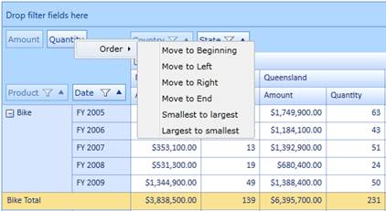

The pivot row fields, pivot column fields, and PivotComputationInfo fields can be arranged individually in any desired order. The following sorting options are available in the context menu that appears in the grouping bar:
· Move to Beginning—Moves the selected item to the beginning position.
· Move to Left—Moves the selected item to the immediate left position.
· Move to Right—Moves the selected item to the immediate right position.
· Move to End—Moves the selected item to the end position.
· Smallest to Largest—Arranges the pivot fields based on the field header from first letter to the last.
· Largest to Smallest—Arranges the pivot fields based on the field header from last letter to the first.
The above mentioned options will rearrange the fields in the respective pivot item area.

Sample Link
A demo of this feature is available in the following location:
C:\Users\<UserName>\AppData\Local\Syncfusion\EssentialStudio\x.x.x.x\ BI\Silverlight\PivotGrid.SL\ProductShowcase\GroupingBarDemo